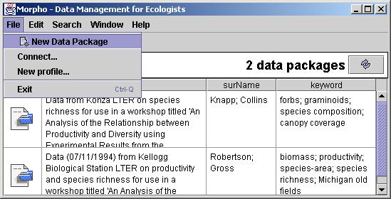
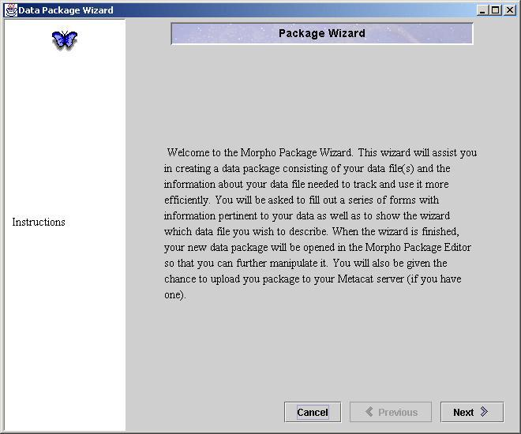
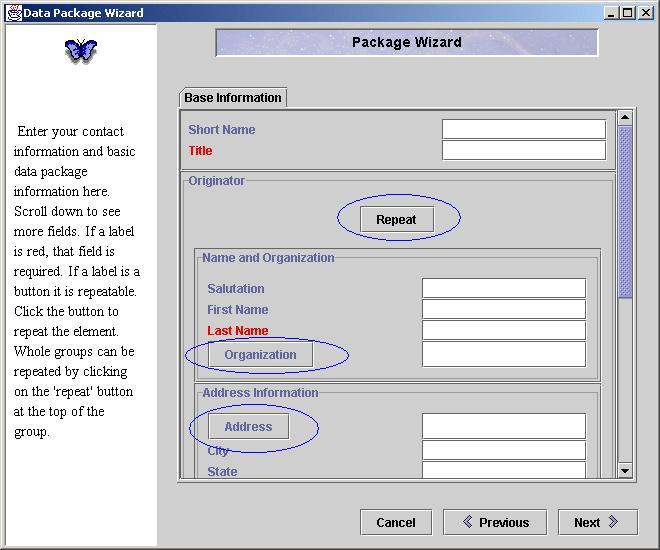
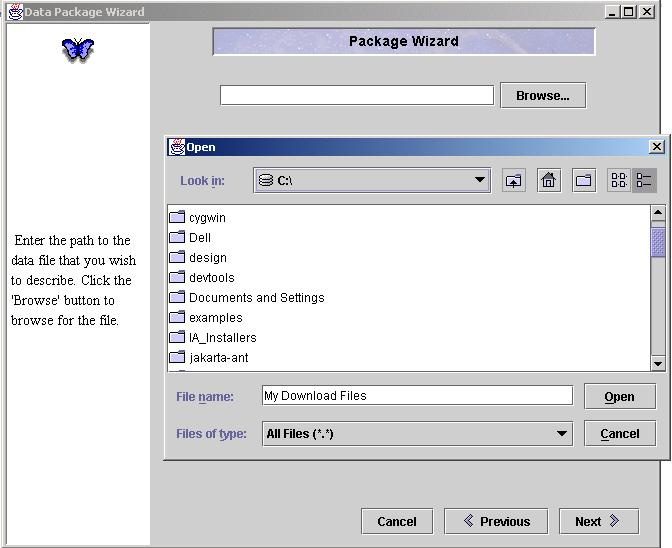
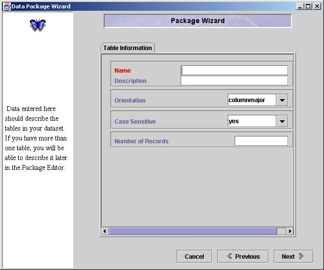
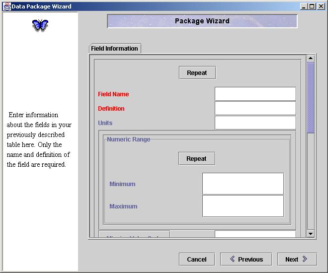
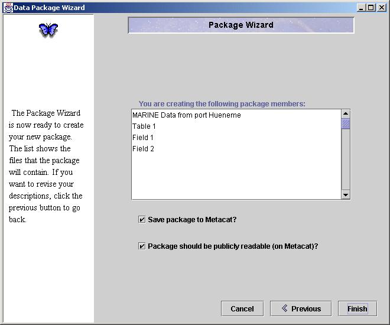

|

Select 'New Data Package' to open the Package Wizard

The introductory screen of the Package Wizard.

The first text entry screen of the Package Wizard. The repeat buttons
are circled in blue. The required fields have labels
that are colored red. Notice that when the 'Repeat'
button is pressed, all of the fields in the 'Originator' group will be
repeated.

This shows a user browsing for a data file. If no data file is chosen,
a data file is not associated with this package and only data descriptions
(metadata) are created.

Enter information regarding the data table here.

Enter information regarding the variables in your data table here.

This is the final screen of the package wizard.
|